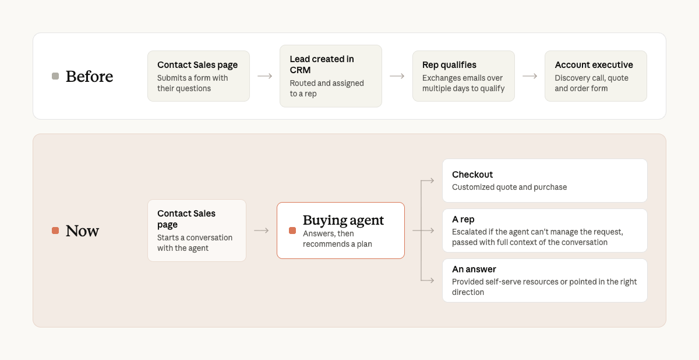

As a sales leader, it pains me to admit that not long ago, people who wanted to buy Claude for their company weren’t getting the answers they needed quickly enough. They had filled out our Contact Sales form but would wait too long to hear back, sometimes for multiple days. Most of their questions were simple: what a plan costs, whether there's a seat minimum, or whether we can meet HIPAA’s contract requirements. The answers were in our documentation and support articles, but customers wanted someone to walk them through, quickly.
So we built a buying agent on Claude Managed Agents (beta) that takes a prospect from "I want Claude for my company" to a completed purchase. The buying agent now holds thousands of conversations a day, answers customers’ most pressing questions, and gets them through checkout. The customers it escalates to our team arrive educated and more ready to make purchase decisions: they turn into opportunities more than twice as often as leads from the old form, and close about five days faster. We intentionally left this experience as opt-in, meaning our customers choose at the start if they’d like to talk to an agent or sales rep based on their preference.

Why the old inbound process broke
Before building the buying agent, our inbound process was fairly straightforward. A buyer filled out a form. The lead was routed to a business development rep, who qualified it and passed it to an account executive. That still works well when a team can talk to everyone who’s interested in the product.
We had tens of thousands of inbound requests every month, and our inbound BDR team couldn’t keep up. Reps spent their days answering questions the docs already covered, and we didn’t have an effective way to reach all of the customers in the queue. This wasn't the experience we wanted for our customers.
We wanted every customer to get a knowledgeable answer at any hour and in any language, and to be able to buy however they preferred, which often means without talking to a sales rep. We wanted our reps to spend their time on the conversations where they can change the trajectory of the outcome.
A buying agent that closes the gap
We deployed the agent where customers were already asking questions: on our Contact Sales and Pricing pages, inside the product, and in our emails. Any customer can find the buying agent within our Claude.ai product, it’s a simple chat experience to help customers understand what plan is best for them. A customer describes what their team needs, the agent asks a few follow-up questions, and it then answers the ones about pricing, security and data before recommending a plan and seat count. Each conversation ends one of three ways:
- Purchase. The buyer goes straight to checkout.
- Hand-off. For larger or more complex deals, the agent passes the buyer to a rep along with the full conversation details.
- A quick answer. Sometimes that's all a customer needs.
We built the agent to follow the same work of our sales reps, which means understanding what the customer is trying to solve, what their current Claude usage looks like, and how we can best help them.

Why did we use Claude Managed Agents?
Under the hood, the buying agent is simple: a prompt, a handful of tools, and Claude, running on Claude Managed Agents. Because the platform takes care of hosting, session management and tool orchestration, our engineers spent their time with sales designing the buying experience instead of building the infrastructure.
We ultimately landed on Managed Agents for the following reasons:
- Fast to production. One engineer built the initial buying agent on Managed Agents in just a few weeks.
- Tech & non-tech contributors. Engineering owned the code, but sales and content leads reviewed and edited the system prompt directly in the Console. Changes went to our staging agent first, so anyone could try a tweak before it reached customers.
- Focus on the domain, not the harness. Managed Agents runs the agent loop, sessions and hosting. We spent our time on the prompt, the tools, and the knowledge base—the three things that are specific to selling.
- Versioning makes iteration less expensive. Every change to the agent is saved as its own version. We were on v7 about a week into internal testing, and we kept shipping prompt changes weekly after launch. When needed, we could easily point new sessions back to a previous version.
- Flexibility to support more use cases. Today, customers discover the agent on our website. Managed Agents supports scheduled runs, which gives us a path to explore other types of customer engagement.

What we learned building the buying agent
Give Claude a goal, not rules. Explaining the goal of the agent worked better than a detailed list of instructions. For example, something as simple as "Your goal is to understand customer requirements, qualify prospects, and recommend the best plan" was more effective than listing out every qualification requirement in a flowchart.
Less is more. We experimented with prompts of varying lengths, complexity, and structure, and found the maxim of 'less is more' works best. Models today can understand complex, nuanced goals and work backwards from them. In practice, that has meant getting out of Claude's way by giving it the knowledge and context it needs to be successful, such as what seat-based pricing covers or when billing cycles run.
Use SMEs in the development loop. This is something that is becoming increasingly valuable in a world where agent coding is speeding up development cycles. By virtue of saving time using Managed Agents and Claude Code, our engineers were able to spend more time with the sales team to shape a customer-centric experience . We were able to test the agent early and often, leading to quick iterations.
Focus on what’s right for the customer. The agent often points small teams to our Team plan instead of Enterprise, because that's the right answer for them in some cases. We decided that's a feature. A buyer who lands on the right plan instead of being upsold is more likely to stay and have a better experience.
Treat every agent to rep escalation as feedback. Each time the agent passes a buyer to a rep, it explains why. Early on, most of those reasons were things customers couldn't yet do on their own with our self-service products. Those reasons shaped how we improve the experience, and the share of conversations that needed a person to help close the deal has fallen by about half.
What changed for customers
The agent now holds thousands of conversations a day, around the clock. Customers get their questions answered instantly instead of waiting for a scheduled call or exchanging emails over multiple days. A lot of our customers actually prefer to talk to an agent rather than a human, because it can give them quick, informed answers as questions arise. Many of our new self-serve Enterprise customers talk to the buying agent before they buy, and we've found that those who talked to the agent beforehand had a better understanding of what they were buying.
How the agent changed our sales organization
The agent changed what our reps spend their days. We've now been able to focus the majority of the team's time and energy on educating customers earlier in their buying journey, having more live customer conversations and spending time in person at events.
The most impactful change has been that our reps now get more informed leads, convert leads to sales opportunities more often than our old contact form, and they close about five days faster. A rep starts the conversation already knowing what the customer needs, what they've been told, and how we can best help them.
For example, one of our inside sales reps, Ojas, used to exchange about 10 emails to close a deal; now it takes about six. He’s been able to 2.5x his output on closed won deals since launching the Buying Agent as it allowed him to focus on highly educated and ready customers who just needed help getting across the line.
Not long ago, inbound was a queue our team couldn't keep up with. Now it's a conversation any buyer can start at any hour, and our reps spend their time more efficiently. The buying agent is our first step toward agents across the whole customer relationship.
Ready to build your own? Learn more about Claude Managed Agents, or talk to our team about bringing agents to your sales motion.
This article was written by Carl Johnson, with contributions from Izzy Lee, Bobby P., Lina Ochman, Yana Gevorgyan, Jerico Johns, and Taylre Duarte.